Suivi des fissures au mm
Posez une carte au format bancaire à côté de la fissure et photographiez : Crackwise mesure sa largeur en millimètres et garde un relevé daté, mois après mois.
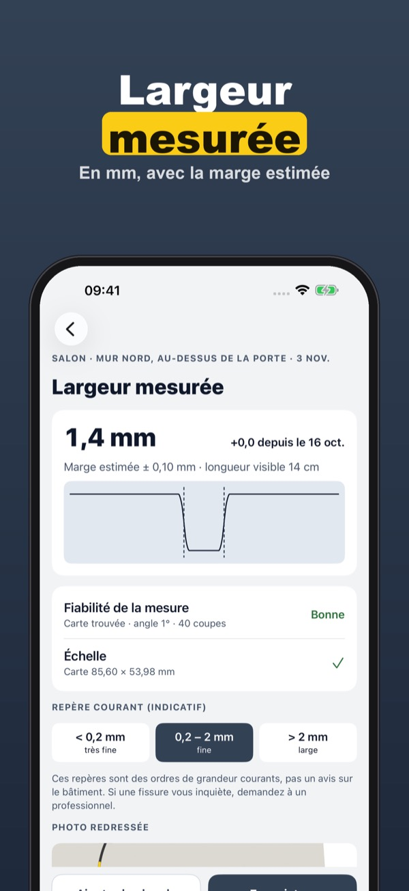
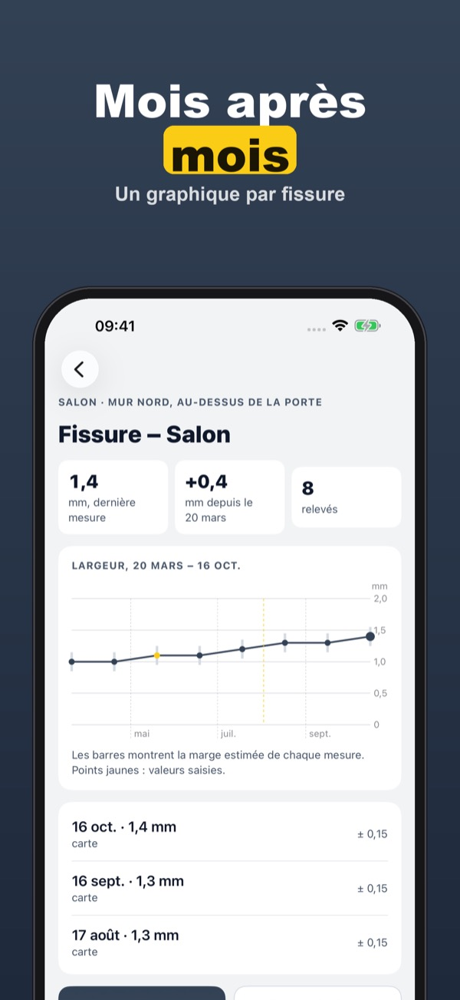
Une fissure est apparue au salon ? Crackwise vous aide à savoir si elle bouge. Posez une carte au format bancaire à côté, photographiez, et l’app mesure la largeur sur le téléphone.
Un point de fissure avec mesures, graphique et historique s’utilise sans achat. Crackwise Plus est un achat unique : points illimités, retour au même endroit, comparaison, dossier PDF et rappels. Sans abonnement.
Crackwise sert à tenir votre propre relevé. Les valeurs sont indicatives (marge affichée) et ne disent rien de la solidité du bâtiment ; elles ne remplacent pas l’avis d’un professionnel.
Terms of Use (EULA): https://www.apple.com/legal/internet-services/itunes/dev/stdeula/
Privacy: https://apps.baytech.nl/crackwise-eu/
Scheurwijdte in mm volgen
Leg een pasje op bankpasformaat naast de scheur en maak een foto: Crackwise meet de breedte in millimeters en houdt een gedateerd verslag bij, maand na maand.
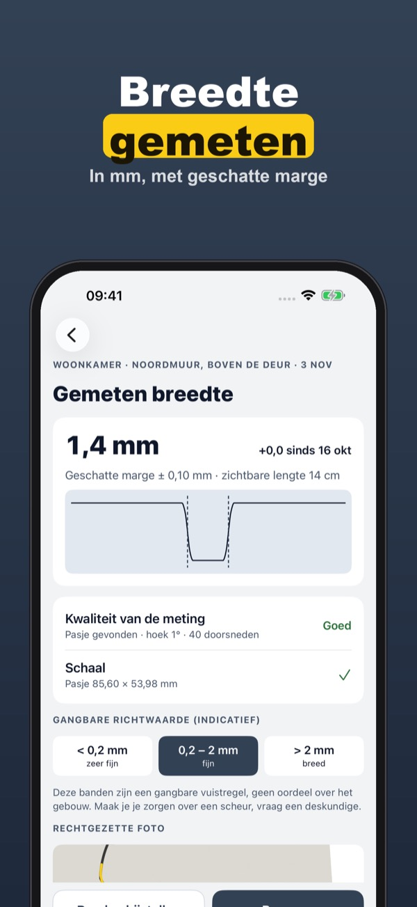
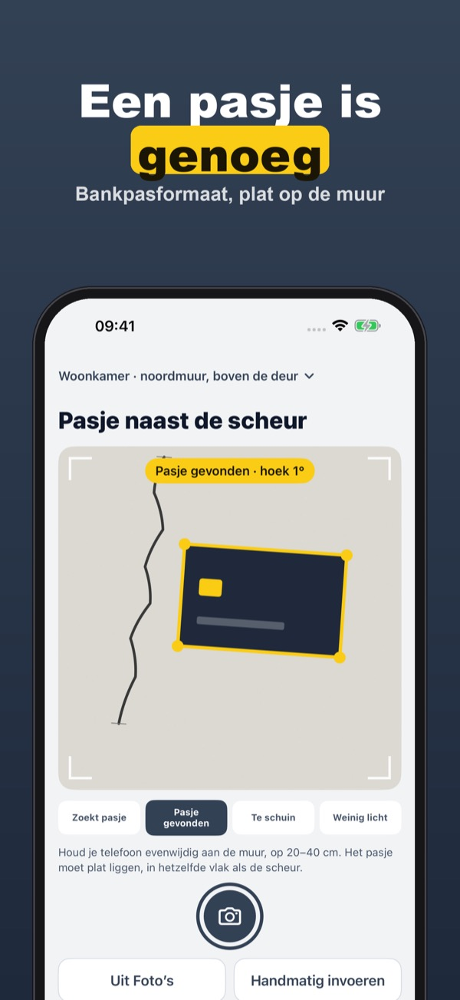
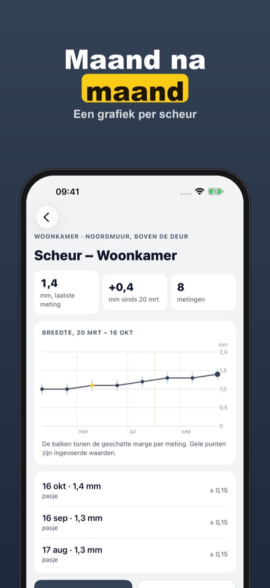
Een scheur in de woonkamer? Crackwise helpt je zien of hij beweegt. Leg een pasje op bankpasformaat ernaast, maak een foto, en de app meet de breedte op je telefoon.
Eén scheurpunt met metingen, grafiek en geschiedenis werkt zonder aankoop. Crackwise Plus is een eenmalige aankoop: onbeperkt scheurpunten, terug naar dezelfde plek, vergelijken, pdf-dossier en herinneringen. Geen abonnement.
Crackwise is voor je eigen verslag. De waarden zijn indicatief (marge zichtbaar) en zeggen niets over de constructie van het gebouw; ze vervangen geen oordeel van een deskundige.
Terms of Use (EULA): https://www.apple.com/legal/internet-services/itunes/dev/stdeula/
Privacy: https://apps.baytech.nl/crackwise-eu/
Rissbreite in mm verfolgen
Leg eine Karte im Bankkartenformat neben den Riss und fotografiere: Crackwise misst die Breite in Millimetern und führt ein datiertes Protokoll, Monat für Monat.
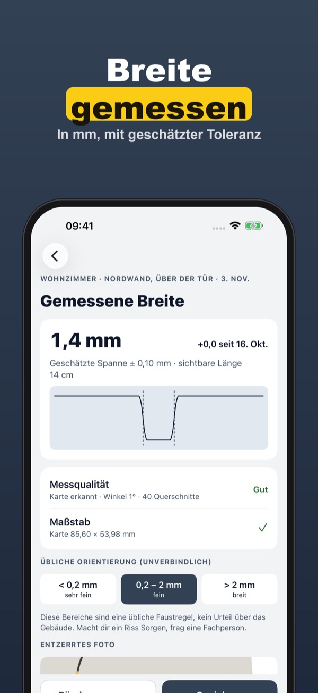
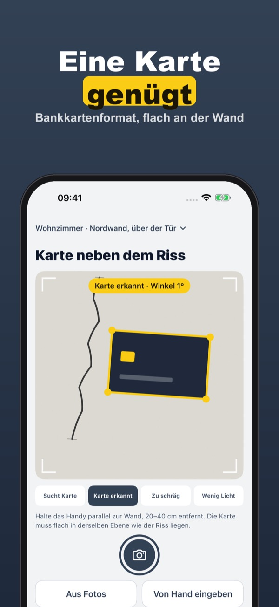
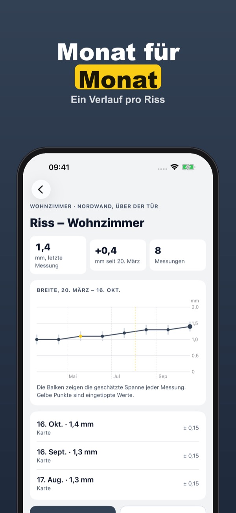
Ein Riss im Wohnzimmer? Crackwise hilft dir zu sehen, ob er sich bewegt. Leg eine Karte im Bankkartenformat daneben, fotografiere, und die App misst die Breite auf dem Handy.
Ein Risspunkt mit Messungen, Verlauf und Historie geht ohne Kauf. Crackwise Plus ist ein Einmalkauf: unbegrenzt Risspunkte, gleiche Stelle wiederfinden, Vergleich, PDF-Dossier und Erinnerungen. Kein Abo.
Crackwise dient deinem eigenen Protokoll. Die Werte sind Richtwerte (Toleranz sichtbar) und sagen nichts über die Standsicherheit des Gebäudes; sie ersetzen keine fachliche Beurteilung.
Terms of Use (EULA): https://www.apple.com/legal/internet-services/itunes/dev/stdeula/
Privacy: https://apps.baytech.nl/crackwise-eu/
Sigue tus fisuras al milímetro
Pon una tarjeta de tamaño bancario junto a la grieta y haz una foto: Crackwise mide su ancho en milímetros y guarda un registro con fecha, mes a mes.
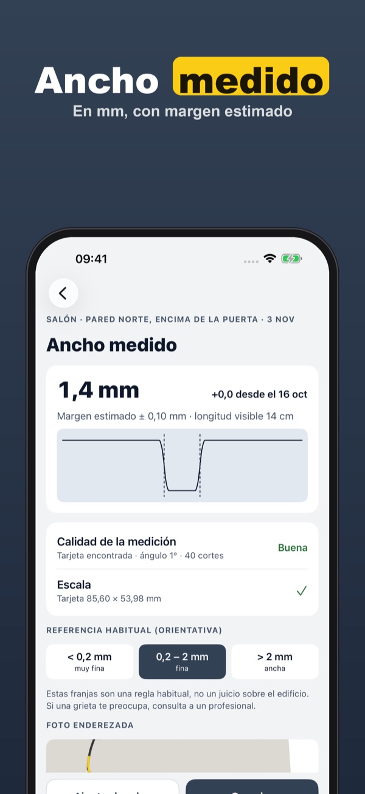
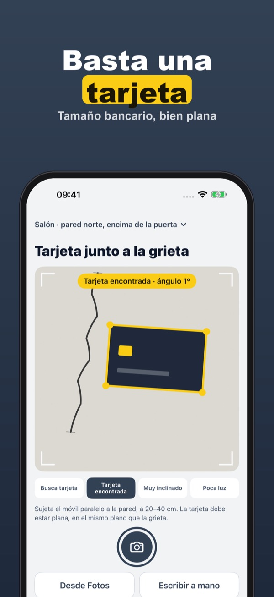
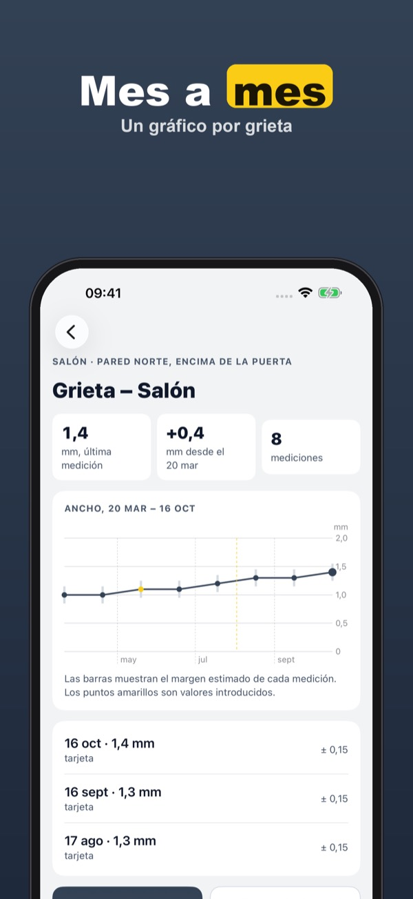
¿Ha salido una grieta en el salón? Crackwise te ayuda a ver si se mueve. Pon una tarjeta de tamaño bancario al lado, haz una foto y la app mide el ancho en el móvil.
Un punto de grieta con medidas, gráfico e historial se usa sin compra. Crackwise Plus es una compra única: puntos sin límite, volver al mismo sitio, comparar, informe PDF y recordatorios. Sin suscripción.
Crackwise sirve para llevar tu propio registro. Los valores son orientativos (margen visible) y no dicen nada de la solidez del edificio; no sustituyen la opinión de un profesional.
Terms of Use (EULA): https://www.apple.com/legal/internet-services/itunes/dev/stdeula/
Privacy: https://apps.baytech.nl/crackwise-eu/
Segui le crepe al millimetro
Appoggia una tessera in formato carta di credito accanto alla crepa e scatta: Crackwise misura la larghezza in millimetri e tiene un registro datato, mese dopo mese.
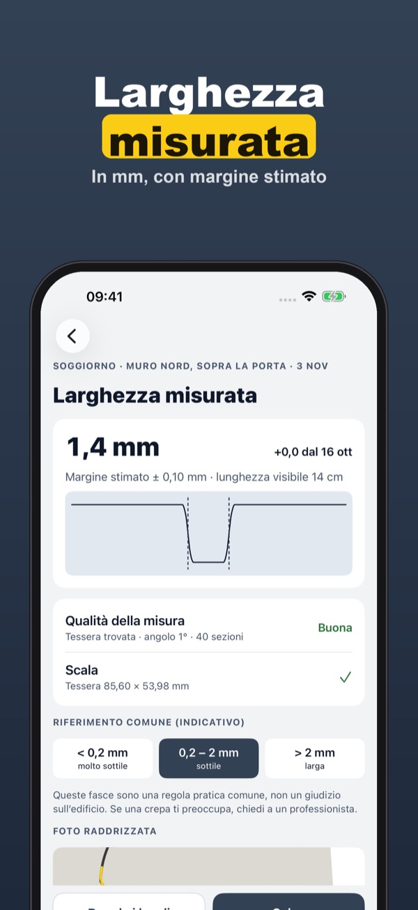
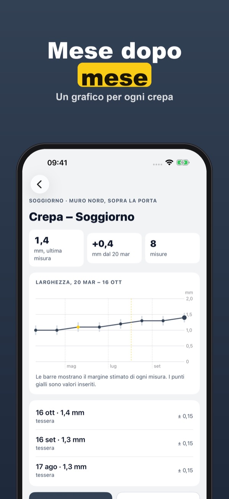
È comparsa una crepa in soggiorno? Crackwise ti aiuta a capire se si muove. Appoggia accanto una tessera in formato carta di credito, scatta e l’app misura la larghezza sul telefono.
Un punto di crepa con misure, grafico e storico si usa senza acquisto. Crackwise Plus è un acquisto unico: punti illimitati, ritorno nello stesso punto, confronto, dossier PDF e promemoria. Nessun abbonamento.
Crackwise serve a tenere il tuo registro personale. I valori sono indicativi (margine visibile) e non dicono nulla sulla stabilità dell’edificio; non sostituiscono il parere di un professionista.
Terms of Use (EULA): https://www.apple.com/legal/internet-services/itunes/dev/stdeula/
Privacy: https://apps.baytech.nl/crackwise-eu/